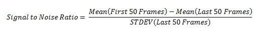

Single molecule fluorescence microscopy studies were used to determine the number of sub-units that had bound to the artificial DNA scaffold. Individual sub-units were labelled with fluorophores, which allowed them to be visualised using a fluorescence microscope. These fluorophores eventually switch off, or photobleach in discreet steps. This allows us to count how many molecules are present by counting the number of photobleaching steps. In essence, this meant we could ‘see’ whether we had built the tip.
Figure 1. Photobleaching events result in discreet steps on bleach trace.
To determine how many fluorescent tip proteins have bound to a scaffold, we first had to know how bright one protein was. This was determined by subtracting the average intensity of one fluorophore from the average intensity of the background:
This average was determined by fitting a Gaussian function on histograms depicting the intensity of many pixels consisting of background and single fluorophores (Figure 1 and 2)
Figure 2. Gaussian fitted histogram (left) for initial intensities of dots chosen by spot finding algorithm at a high signal to noise ratio. Spots selected by the algorithm (right) can be visually confirmed to be true spots.
Figure 3. Gaussian fitted histogram (left) for initial intensities of dots chosen by spot finding algorithm (right) at a very low signal to noise ratio. The majority of spots chosen by the algorithm are obviously not true spots and represent background intensities.
The mean intensity of a fluorophore was determined to be 1807, with a standard deviation of 1767.
It should be noted that the data is undersampled, as it consists of spot data from a single camera field of view, with approximately 25-75 real spots estimated to be observed.
It should be noted that the data is undersampled, as it consists of spot data from a single camera field of view, with approximately 25-75 real spots estimated to be observed.
It should be noted that the data is hugely undersampled, as it consists of spot data from a single camera field of view, with approximately 25-75 real spots estimated to be observed.
Proteins can tend to stick to glass coverslips where they can sometimes fall apart. So it is important to coat our coverslips to pacify them and prevent non-specific binding of fluorescent protein. To ensure that this surface chemistry was effective, we tried to image fluorescent protein on surfaces passivated with PEG, PEG-Biotin and avidin (Figure 4).
We were unable to get any good images of fluorescent monomer after we washed out our surface. This could indicate that non-specific interactions are quite low. This would mean any spots we see after washing out our surface are caused to fluorescent subunits attached to a scaffold.
Figure 4. Representative images of surface when 30nM of fluorescent monomer incubated for 2 minutes and then washed out. Low levels of fluorescent spots could indicate low non-specific binding levels.
To determine whether specifically binding our DNA construction scaffold onto these surfaces could in contrast encourage tip proteins to stick to the surface of the cover slip for imaging. Solutions of the tennis racket scaffold were pre-incubated with fluorescent tip proteins before imaging (Figure 5).
Figure 5. Fluorescent particles from a solution of LcrV and “Tennis Racket” Scaffold.
When the intensity of the spots was observed over time, the majority of the spots had either zero or one distinguishable bleaching step. Peak intensities within the two standard deviations of the expected value of a single fluorophore, indicating they were monomeric.
However, some spots had initial intensities that were many times higher than that of a single fluorophore and their intensity profiles contained multiple distinct bleach traces. This would indicate that multiple fluorophores had localised to that point (Figure 6).
Figure 6. Representative example of an intensity profile. The dotted lines (green) represent the raw data, the bold blue line represents the data smoothed with a Cheung Kennedy filter to reduce noise.
To determine with more accuracy the number of sub-units that had bound to the scaffold, a power spectrum was taken of the pair-wise distance distribution function of a filtered trace. The sharpest peak in the power spectrum that lied within 2 standard deviations of the mean single fluorophore intensity (see Table 1) was chosen as the most accurate marker for bleaching step size (Figure 7).
Figure 7. The power spectrum (ECF) of the pairwise distribution density function for the filtered trace (blue) and unfiltered trace (green) in Figure X. The Y values represent the frequency of various step sizes present in the original trace. The peak at 1908 was chosen as the bleaching step size used to infer stoichiometry. It was the sharpest peak in the vicinity of the mean single fluorophore intensity and both the filtered and unfiltered trace ECF’s were coincident around that point.
This step size was used to infer stoichiometry through the following:
This indicates that the particular spot has 5 sub-units colocalised at that location. Assuming that as per Section 2, non-specific binding between monomer and the surface is low, the spots that are observed here would result from monomers bound to a scaffold.
This would indicate that for the observed trace, 5 tip proteins have bound to our artificial scaffold – in essence, that we’ve built the tip. An example bleach trace from what appears to be 5 fluorescent tip proteins is shown in Figure 8.
Figure 8. Schematic illustrating the presence of 5 distinct bleach steps, of roughly 1800-2200 counts on the filtered trace.
However, very few multimeric traces were observed, as shown in Figure 9. Many of the traces displayed significant noise, making it difficult to clearly identify distinct traces, or peaks on the ECF function.
Figure 9. Bar chart demonstrating the low yield of multimeric complexes, with approximately 5.5% (10/193) of complexes consisting of more than 1 subunit.
This indicates a low conjugation yield of the fluorescent sub-units to the scaffold. It could also be a result of rapid dissociation of the complex upon dilution of the solution from incubation concentrations (100’s of nM) to the concentrations required for imaging (pM to low nM).
This could be improved through the development of irreversible DNA-protein conjugation chemistries, which could generate greater yields in the future. This would form the basis for future work.
We were able to observe the presence of a number of multimeric complexes, which indicates colocalisation of fluorescent sub-units.
However, the yield of multimeric complexes was low, particularly for the 5’mer complexes which would indicate formation of a “full tip”. This indicates that higher yield DNA-protein conjugation chemistries may be required to visualise complexes at single molecule concentrations.
It cannot be said with certainty that the complexes were formed due to the presence of the scaffold and not random aggregation. This is due to lack of experimental certainty in our “non-specific interactions” experiment. The data was also undersampled, which didn’t allow for robust statistical analysis.
Addressing these issues forms the basis for future work.
Future work could involve:
Passivated PLL-PEGBIO cover slides with a layer of excess neutravidin (.5mg/ml) were used for this study. Solutions of protein were prepared at 30nM and 3nM. They were flowed onto the tunnel slide, allowed to incubate for 2 minutes and then washed out. The slides were imaged immediately afterwards.
Passivated PLL-PEGBIO cover slides with a layer of excess neutravidin (.5mg/ml) were used for this study. NiNTA conjugation chemistry was used to bind proteins to the scaffold to form complexes. The tennis racket scaffold and NTA DNA were annealed to form a strongly associated complex, with NTA at a 10x excess. Nickel and LcrV were added at a 10x of the NTA concentration in the annealed mixture. The solution was allowed to incubate for 5-10 minutes.
Solution was flowed into the slide at concentrations of 30nM & 3nM and then washed out after an incubation of 2 minutes, to allow for biotin streptavidin interactions to occur. The solution was then imaged immediately.
A custom built TIRF microscope was used for this study. This allowed for selective visualisation of the area approximately 100nM above the glass surface by avoiding illuminating dirt and other “junk” existing past the surface. An excitation wavelength of 488nM was primarily used.
Emission was imaged at 100nM per pixel by an electron multiplying CCD camera (Andor Technology). Images were taken at an exposure time of 300ms and an electron multiplying gain of 300. The laser pulse intensity was standardised at 75mW. The laser and capture settings used for various experiments are as follows:
Cover slides were prepared with a passivated PLL-PEGBIO surface to prevent non-specific interactions with the glass surface from occurring. Tunnel slides were prepared by attaching a glass cover slide to a 1mm thick microscopy slide using two strips of double sided tape. A “tunnel” was left in between two strips of tape to allow solution to flow through. An excess layer of avidin (neutravidin at .5mg/ml or streptavidin at .02mg/ml) was used to allow for specific binding of scaffolds to the surface.
As outlined in protein engineering and production, LcrV was labelled using Alexa488 fluorophore dye. The labelling efficiency could not be accurately determined, but was reported to be above 100% due to the lack of sensitivity of detection instruments.
Images were analysed in MATLAB to determine to size and number of individual photobleaching steps.
The mean pixel intensity of the first 50 frames of an image was used to find regions of high intensity corresponding to fluorophores. 3x3 pixel patches were extracted at those locations [2]. Patches were selected at various signal to noise ratio thresholds, where the threshold was given by:
This was used to sort the patches, where any patches that fell below a set threshold were discarded.
The maximum pixel intensity in each patch was plotted against time (the frame of the image) to obtain photobleaching traces. To normalise the traces and obtain smoother curves, Cheung-Kennedy forward and backward nonlinear filtering was applied [3].
To determine the step size and infer stoichiometry of imaged complexes. The step size corresponding to a single photobleaching step can be evaluated through calculation of the power spectrum of the empirical characteristic function (ECF) of the pairwise difference density function (PDDF) of the trace. The PDDF is the pairwise difference between all points in a trace [2].
The sharpest peak of the power spectrum, or the sharpest peak within a range, corresponds to the step size. The stoichiometry is then calculated as the difference between max and background intensity divided by step size.
1. Leake, M. C., Chandler, J. H., Wadhams, G. H., Bai, F., Berry, R. M., & Armitage, J. P. (2006). Stoichiometry and turnover in single, functioning membrane protein complexes. Nature, 443(7109), 355-358.
2. Baker, M. A., Rojko, N., Cronin, B., Anderluh, G., & Wallace, M. I. (2014). Photobleaching reveals heterogeneous stoichiometry for equinatoxin II oligomers. Chembiochem, 15(14), 2139-2145.
3. Chung, S. H., & Kennedy, R. A. (1991). Forward-backward non-linear filtering technique for extracting small biological signals from noise. Journal of neuroscience methods, 40(1), 71-86.